Phase 7 개정 시안
실제 사이트(로컬 빌드)에 CSS 만 덧씌워 1440×860 으로 찍었다. 그림을 누르면 원본 크기로 열린다. 테두리가 빛나는 칸이 추천안이다.
1. 다크 모드 그래프 배경 메인 페이지와 톤 맞추기
지금 그래프는 짙은 남색(#040a1f, 가운데 #0f1e4a)이고 메인은 중성 잉크(#0b0e14)라서 페이지를 오가면 색이 튄다. 두 시안 모두 무대 가장자리를 메인 배경과 같은 #0b0e14 로 두어 헤더와 경계가 이어진다.
기준: 메인 페이지 배경 #0b0e14 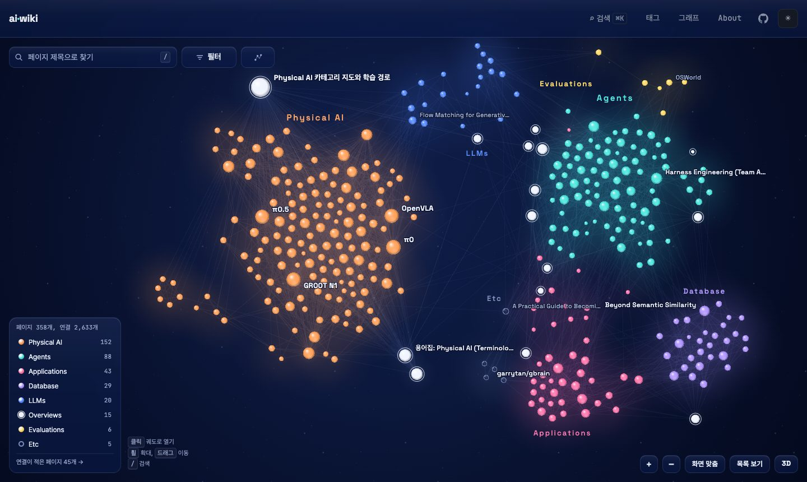
현재: 심해 남색 가장자리 #040a1f, 가운데 #0f1e4a, 유리판도 남색 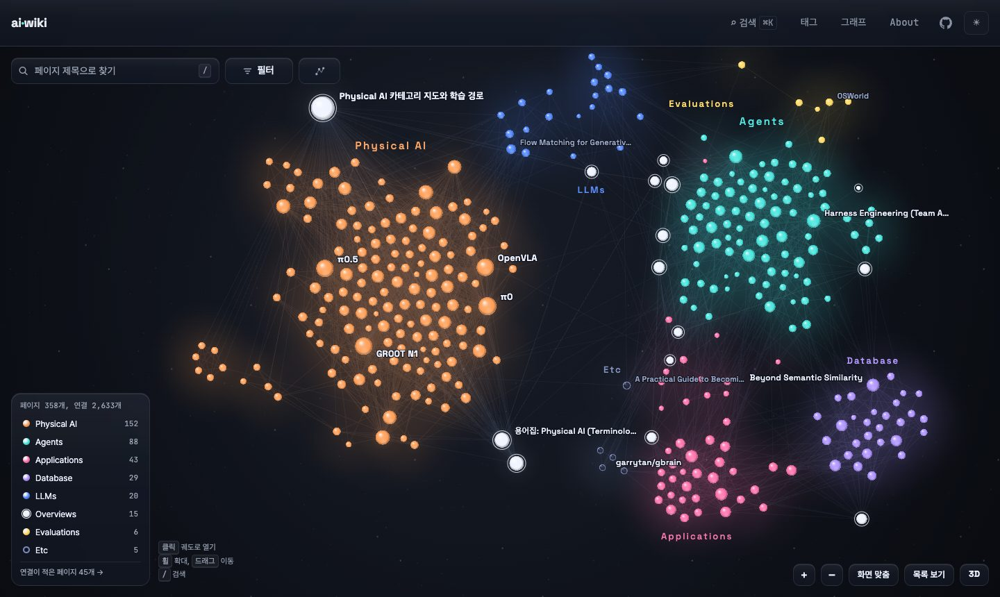
1A 잉크로 통일 가장자리 #0b0e14, 가운데 #161b26 (무채), 유리판과 패널도 메인의 surface 색 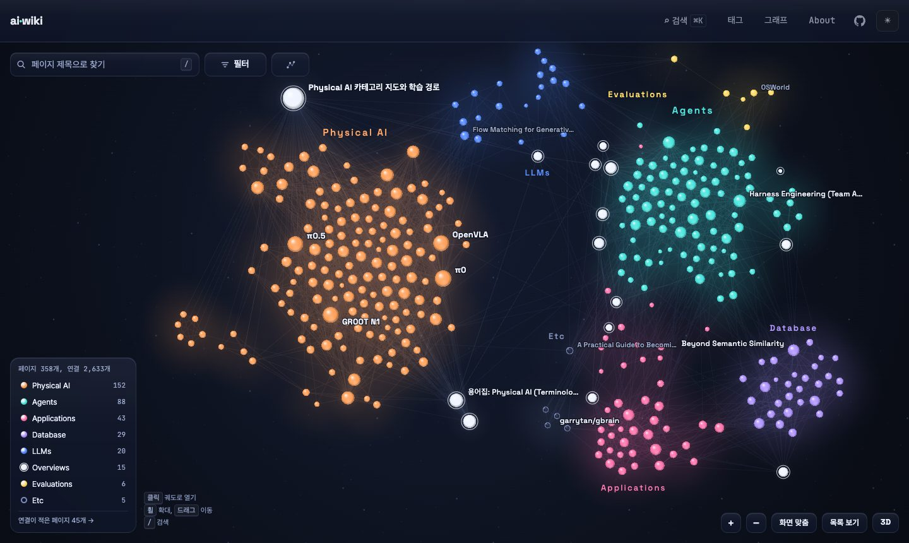
1B 잉크 + 엷은 남색 코어 추천 가장자리 #0b0e14 로 메인과 이어지고, 가운데만 #121a2f 로 살짝 푸르게 남겨 깊이감을 유지
2. 노드 색 덜 알록달록하게
다크는 1B 배경 위에서 찍었다. 색각 이상 거리(제1·2·3 색각 이상 흉내 후 CIEDE2000 최솟값, 기준 5 이상)와 배경 대비(그래픽 기준 3:1 이상)를 함께 적었다. 모양 단서가 있는 Etc(빈 원)와 Overviews(고리)는 거리 계산에서 뺐다.
현재: I 심해 8색 색각 거리 5.4, 대비 5.6 이상. 8색이 모두 채도가 높다
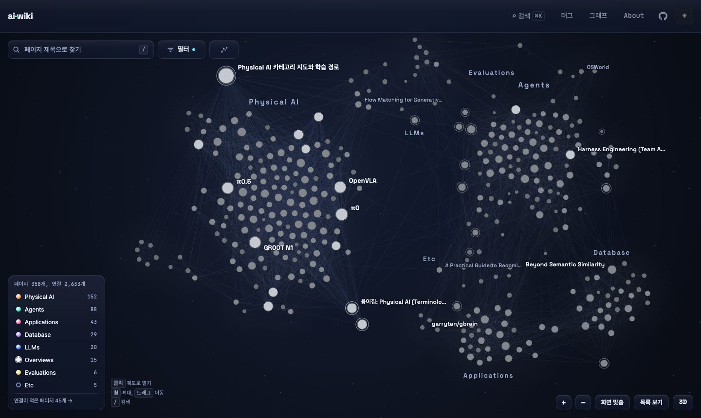
2A 모노를 기본으로 이미 만든 "고른 것만 색으로" 스위치를 처음부터 켠다. 쉬는 노드는 회색 세 단계, 호버·검색·필터로 고른 것만 카테고리 색. 코드 변경이 가장 적다. 처음 봤을 때 카테고리 구분은 성운 이름과 범례에만 의존한다 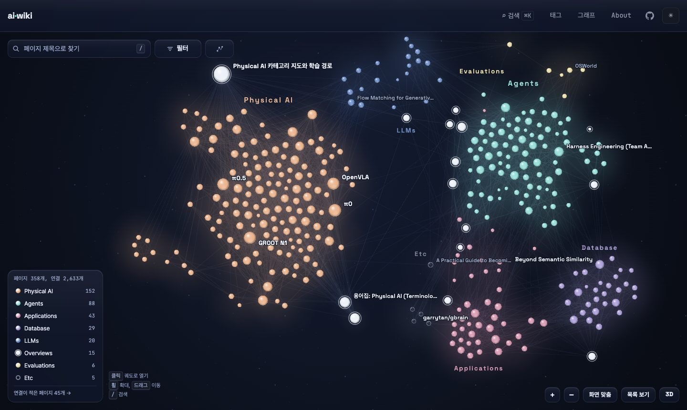
2B 차분한 8색 색상(hue)은 그대로, 채도를 절반쯤 낮춘 파스텔. 색각 거리 다크 6.0 / 라이트 5.9, 대비 다크 4.9 / 라이트 3.1
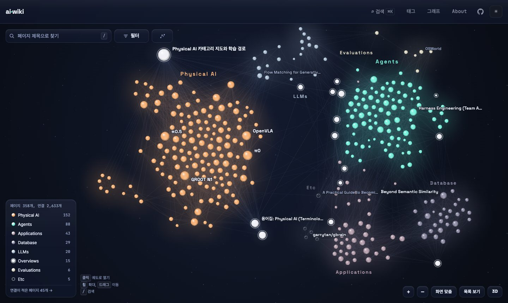
2C 사이트 두 강조색 + 회청색 추천 가장 큰 두 카테고리 Physical AI(152)와 Agents(88)만 사이트의 앰버와 아쿠아, 나머지 여섯은 채도를 거의 뺀 회청·회보라·모래색. 그래프가 사이트 색 언어 안으로 들어온다. 색각 거리 다크 5.8 / 라이트 6.8, 대비 다크 4.0 / 라이트 3.4
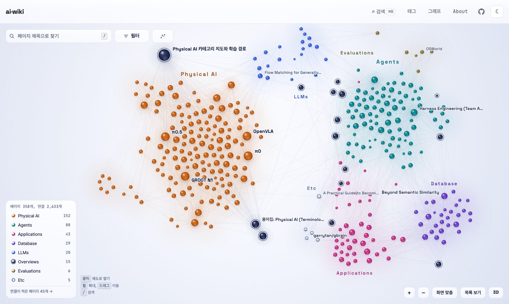
현재 I (라이트) 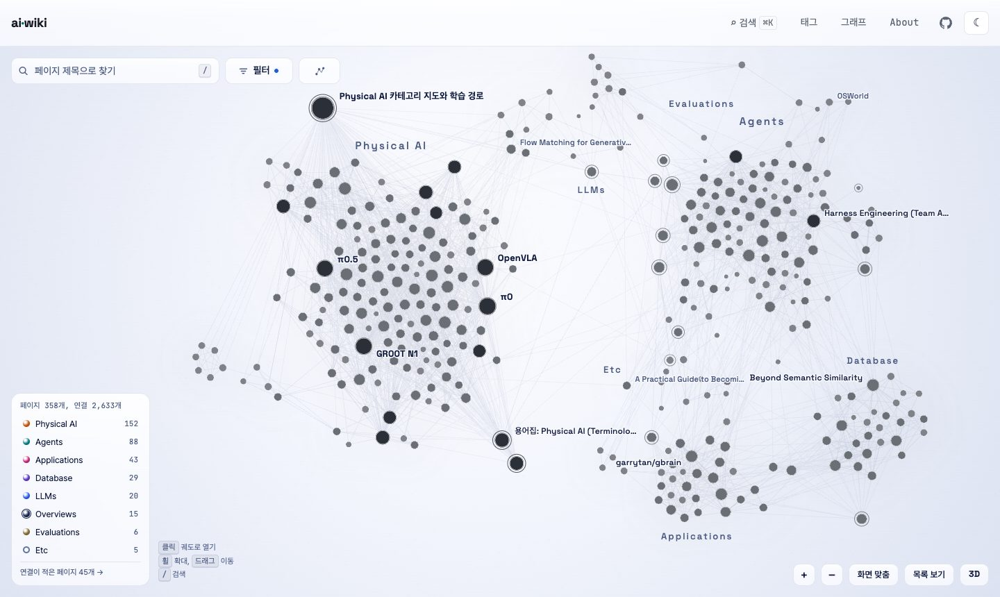
2A 모노 기본 (라이트) 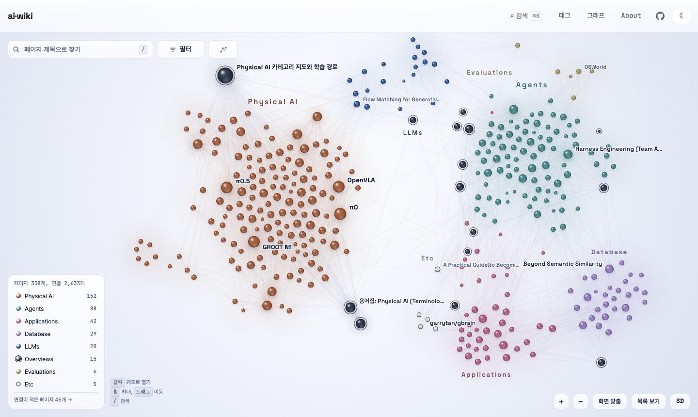
2B 차분한 8색 (라이트)
2C 두 강조색 (라이트) 추천
2C 를 고르더라도 모노 스위치는 그대로 남는다. 2B나 2C에 "모노를 기본으로"를 겹치는 조합도 가능하다.
3. 라이트 모드 강조색 메인과 wiki 공용
누가 바꿨나: 이번 Phase 7 작업에서 제가 맡긴 하위 에이전트가 그래프 범위를 넘어 공용 토큰을 바꿨다. 범위를 지키지 못한 제 관리 실수다.
00b37a24 (11-27 08:14) "공용 크롬 대비를 두 테마에서 WCAG AA로": 라이트 --signal #0fb89b → #006d59 , --signal-physical #a85b12 → #984c00, 라이트 --faint #9aa2b0 → #686f7c, 다크 --faint #5a6373 → #7f899abe4aef82 (11-27 07:54) "그래프 색상을 심해 그라디언트로": 메인 히어로 그림이 아쿠아 선과 앰버 점에서 카테고리 8색 점과 회청색 선으로 바뀜
원래 값 #0fb89b 는 밝은 바탕 위 대비가 2.37:1 이라 WCAG 글자 기준(작은 글자 4.5, 큰 글자 3.0)에 둘 다 못 미친다. 그래서 바꾼 것이지만 색감이 크게 어두워졌다.
아래 네 장은 히어로 그림을 원래 그림(강조색을 따르는 선)으로 두고 강조색만 바꿔 찍었다.
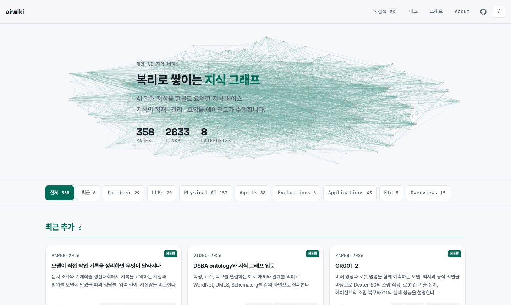
현재 #006d59 대비 5.9:1, 모두 통과. 짙은 녹색 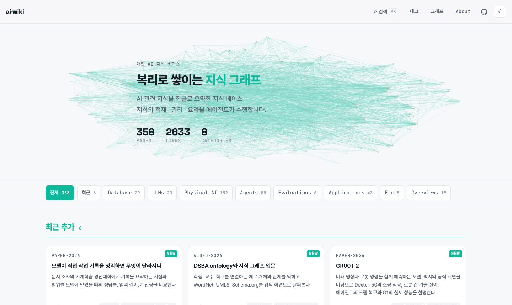
3A 원복 #0fb89b --faint, --signal-physical 도 예전 값. 대비 2.37:1 로 글자 기준 미달 (예전 상태 그대로) 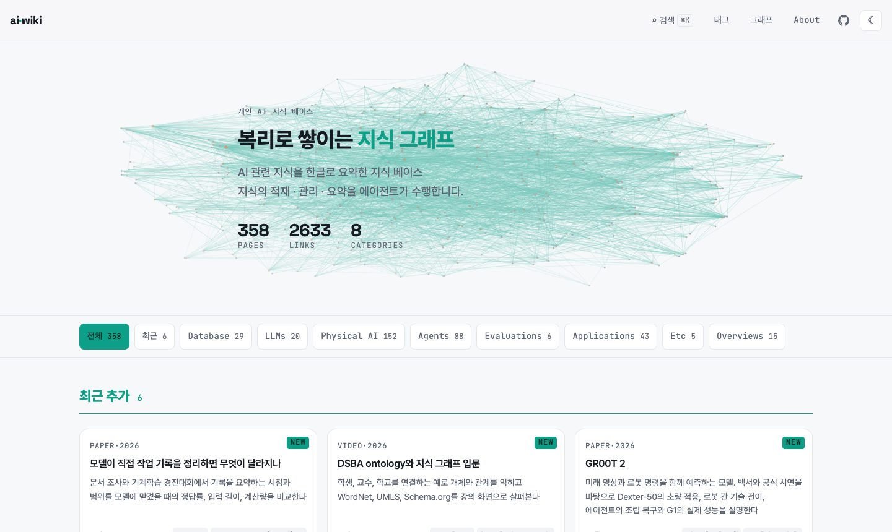
3B 밝은 틸 #0d9f87 + 칩 위 짙은 글자 추천 원래 색에 가까운 밝은 틸. 큰 글자와 그래픽 기준 3.1:1 통과. 채운 칩과 NEW 배지의 글자는 흰색 대신 짙은 잉크(#04211c, 5.1:1), 본문 속 작은 링크만 #0f766e(5.2:1) 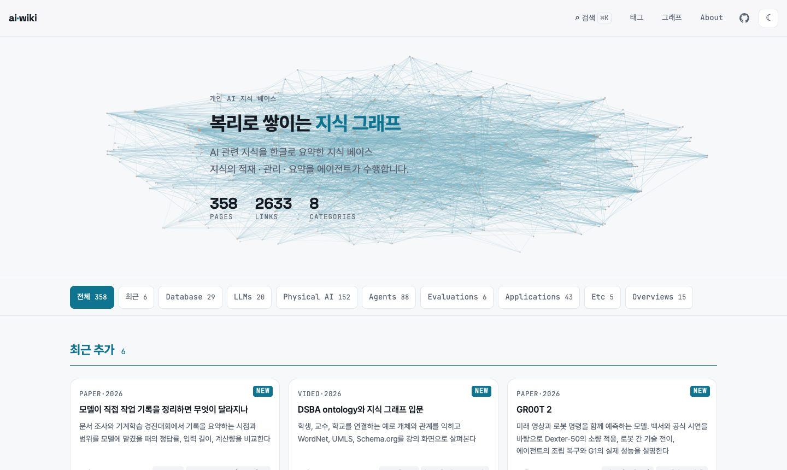
3C 녹색기를 뺀 청록 #0e7490 대비 5.0:1, 모두 통과. 명도는 현재와 비슷하지만 녹색이 아니라 푸른 청록으로 읽힌다 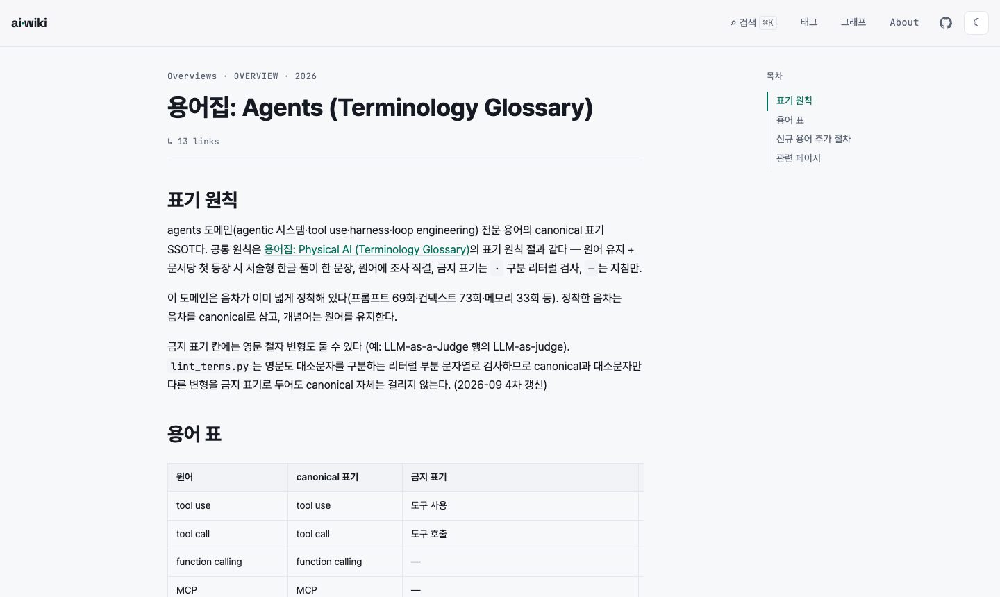
wiki 페이지: 현재 wiki 페이지: 3A 원복 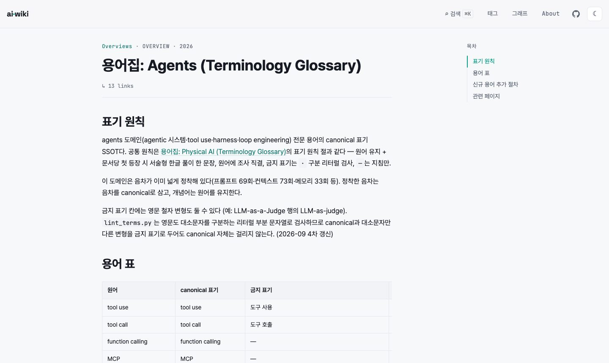
wiki 페이지: 3B 밝은 틸 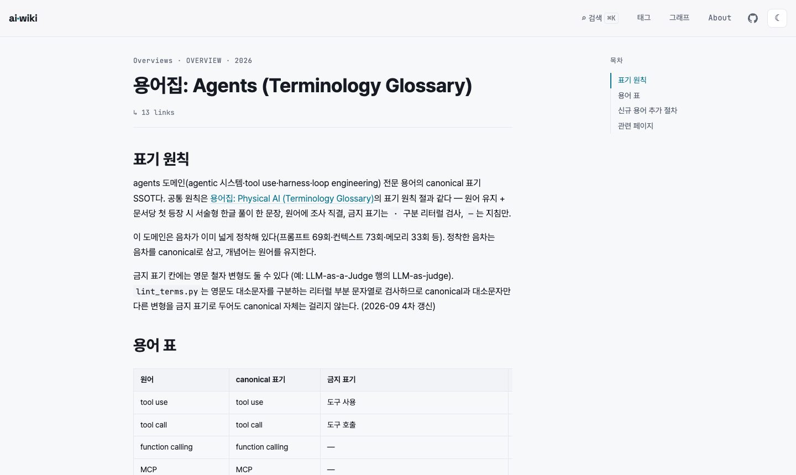
wiki 페이지: 3C 청록
4. 메인 히어로 그림 그래프 페이지와 따로 갈지, 함께 갈지
원래 그림은 선을 강조색(아쿠아)으로, 허브만 아쿠아 점, Physical AI 점은 앰버로 그렸다. 지금은 그래프 페이지와 같은 카테고리 색 점과 회청색 선이다. 2C 를 고르면 히어로도 "아쿠아와 앰버 + 회색"이 되어 원래 인상에 가까워진다.
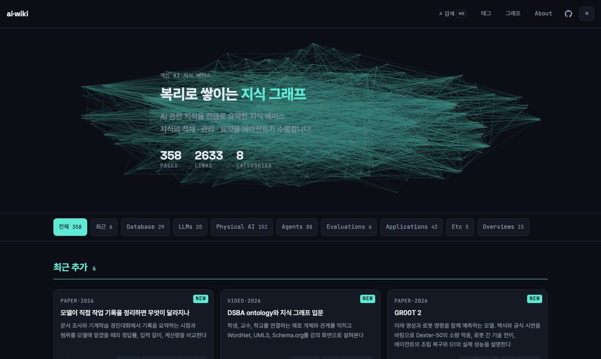
H1 원래 그림으로 원복 (다크) 추천 사이트 첫인상을 Phase 7 이전으로 되돌린다. 그래프 페이지 팔레트와 무관 현재: 카테고리 I 8색 (다크) H2 그래프 팔레트를 따름: 2B (다크) 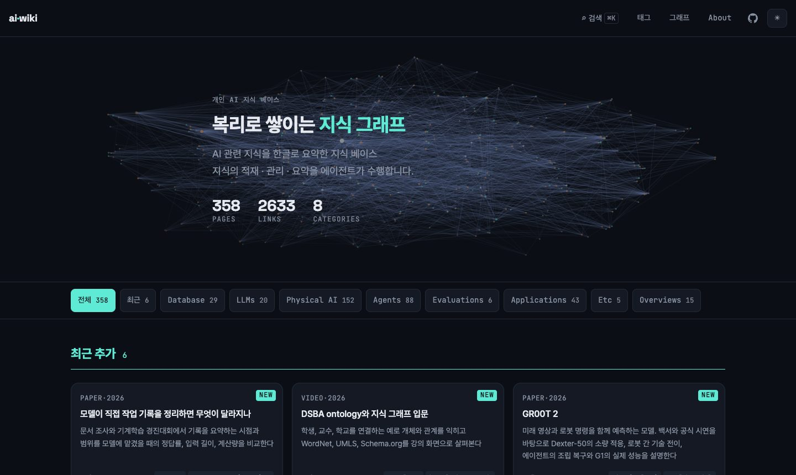
H2 그래프 팔레트를 따름: 2C (다크) H1 원복 (라이트, 강조색 #0fb89b) 추천 선 색은 3번에서 고른 강조색을 따른다 현재 (라이트) 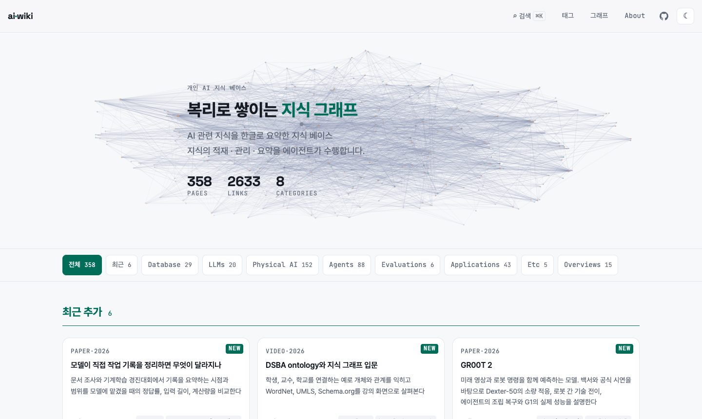
H2: 2B (라이트) 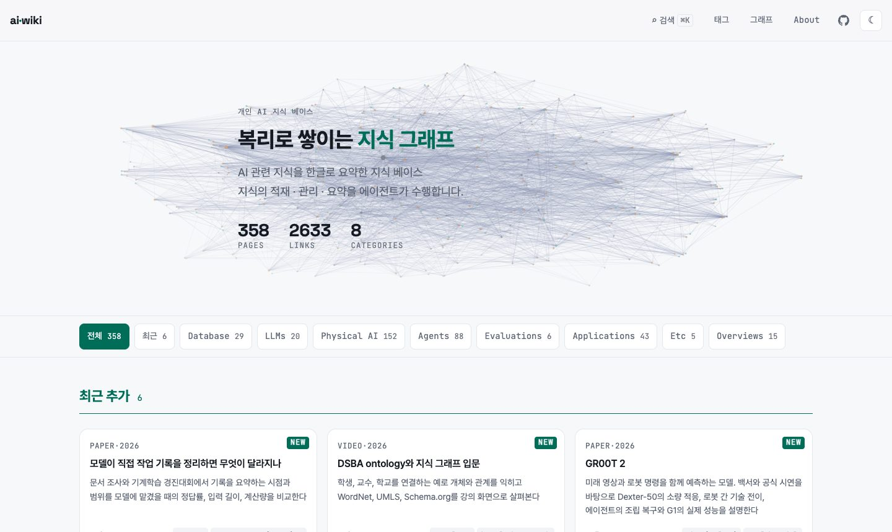
H2: 2C (라이트)